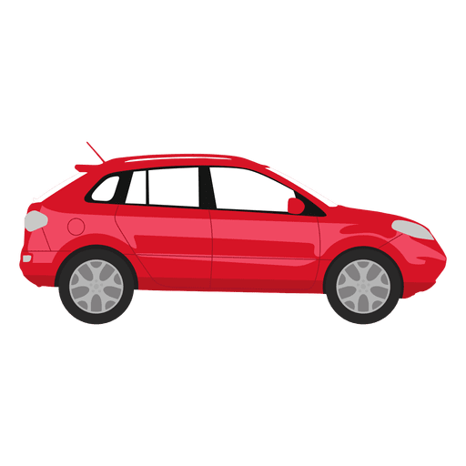
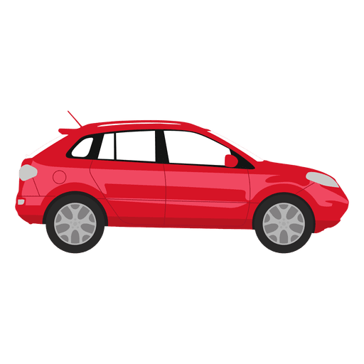

Presiona en los botones alrededor del auto para conocer sobre las distintas causas de accidentes automovilisticos en chile, en el ultimo año.


 

Muertes por cada 1000 vehículos
Ley Tolerancia Cero
Ley Emilia
Proyecto No Chat
Ley 50 km/h

Ley Tolerancia Cero
¿En qué consiste?
La ley te castiga por tu consumo previo o durante la conducción. Al tener desde 0,8 gramos de alcohol por litro de sangre se establece que estás en “estado de ebriedad”. Tener desde 0,3 gramos de alcohol por litro de sangre hasta 0,79, se establece que estás en “bajo la influencia”.
¿Cuáles son los castigos?


Pagar una multa desde 1 a 30 UTM (1 UTM = $51.798, 30 UTM = $1.553.940)
Suspensión de la licencia desde 3 meses hasta toda la vida.
Condenas de prisión desde 0 días hasta 5 años.
Muertes por influencia de alcohol

Ley Emilia
¿En qué consiste?
Se sanciona con cárcel efectiva de al menos 1 año a los conductores en estado de ebriedad que causaron lesiones graves o muerte. Se establece como delito el fugarse de un accidente o negarse a tomar un alcohotest.
¿Cuáles son los castigos?
Por fuga: Multa de 3 a 20 UTM.
Suspensión licencia de 1 mes a toda la vida.
Condenas de prisión desde 0 días a 5 años por fuga y de 1 año a perpetua por lesiones o muerte.
Muertes por influencia de alcohol

Proyecto No Chat
¿En qué consiste?
Prohibe la conducción haciendo uso de un aparato electrónico sin manos libres.
¿Cuáles son los castigos?
Multa de 1 a 1,5 UTM
Muertes por no prestar atención al conducir

Ley 50 km/h
¿En qué consiste?
Busca disminuir el límite máximo de velocidad de vehículos de menos de 3.860 kilogramos de peso bruto vehicular y motocicletas en zonas urbanas a 50 kilómetros por hora.
¿Cuáles son los castigos?
Multa de 1,5 a 3 UTM
Muertes por manejar a velocidad imprudente